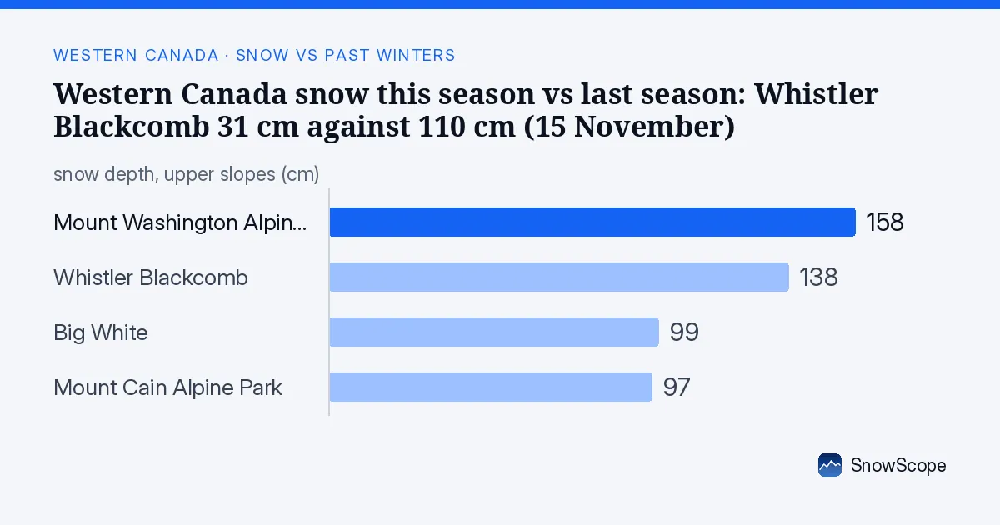

Western Canada snow this season vs last season: Whistler Blackcomb 31 cm against 110 cm (15 November)
Is there more snow than a year ago? We compared today with 15 November last winter at 4 resorts in Western Canada: 2 of them have more snow now, according to our snow model. The biggest change is at Whistler Blackcomb: 31 cm today against 110 cm a year ago. Year-on-year gaps this early are mostly weather noise; we report them anyway, with a straight face.
See the live snow forecast for Mount Washington Alpine Resort in the SnowScope appSnow depth, powder alerts and the 3D map, free.
Resort by resort
Mount Washington Alpine Resort at 1,325 m: 1 cm now, less than the 2 cm of 15 November last winter. Usual for the date: 20 cm.
Whistler Blackcomb, 1,456 m: 31 cm today, less than last winter's 110 cm on 15 November. The usual value for this date: 98 cm.
Big White at 1,891 m: 48 cm now, more than the 24 cm of 15 November last winter. Usual for the date: 32 cm.
Mount Cain Alpine Park, 1,403 m: 32 cm today, more than last winter's 7 cm on 15 November. The usual value for this date: 26 cm.
| Resort | Snow depth | New snow, 72 h | Coming, next days | Top |
|---|---|---|---|---|
| Mount Washington Alpine Resort | 158 cm | 9 cm | 11 cm | 1,569 m |
| Whistler Blackcomb | 138 cm | 82 cm | 13 cm | 2,259 m |
| Big White | 99 cm | 4 cm | 4 cm | 2,271 m |
| Mount Cain Alpine Park | 97 cm | 66 cm | 9 cm | 1,616 m |

Against past winters
At about 1,325 m, Mount Washington Alpine Resort has 4 cm today; a normal 15 November has 20 cm there.
Only one winter in ten has more than 71 cm on this date.
A week ago the same spot had 6 cm.
In past winters the best snow at Mount Washington Alpine Resort usually came early January / late February.
A slow start is common and says little about January; for now the highest lifts and the runs with snowmaking are the safe choice.
Station check
We have no station with a measured history for the same date last winter in this area, so this comparison uses our snow model only.
Why the difference
Mount Washington Alpine Resort this winter: 1 days gaining 10 cm or more, 1 days losing 5 cm or more (melt, rain, wind). The first 5 cm came on 26 October.
Our model's tally for Whistler Blackcomb this winter: 2 days with a gain of 10 cm or more, 1 days with a loss of 5 cm or more to melt, rain or wind. The first 5 cm came on 26 October.
Big White this winter: 0 days gaining 10 cm or more, 0 days losing 5 cm or more (melt, rain, wind). The first 5 cm came on 26 October.
One storm can flip these early numbers, so they say little about the season ahead.
Last winter in numbers
Mount Washington Alpine Resort: the peak of last winter (2025-26) was 168 cm, on 7 April, at this height.
Whistler Blackcomb, last winter (2025-26): peak 417 cm on 26 March, same height.
Big White: the peak of last winter (2025-26) was 153 cm, on 17 March, at this height.
Tips for skiers
- A better start than last year is no promise for the holidays: watch the forecast, not only the snow already on the ground.
- Model values describe an area at one height; a station measures one point. Read both before you decide.
- Snow on the map does not mean a resort is open: check lifts and dates on the resort's website.
- Before any off-piste or touring day, read the official avalanche bulletin (links below).
About these numbers
Resort snow depths are the deepest snow on the resort's upper slopes from the SnowScope snow model (about 1 km, run of 15 November); they are estimates for an area, not a measurement at one point. Station values are measurements on the date shown. Forecasts can change. Always read the official avalanche bulletin before going off-piste.
Official avalanche bulletins: Avalanche Canada
Cite this report
For research, teaching or the press: the numbers and charts are free to reuse under CC BY 4.0 with this citation.
SnowScope (2026), Western Canada snow this season vs last season: Whistler Blackcomb 31 cm against 110 cm (15 November), https://snowscope.app/blog/en/2026/11/western-canada-snow-this-season-vs-last-season-15-november-2026.html, accessed 2026-11-15
SnowScope (Atlas Labs). (2026, November 15). Western Canada snow this season vs last season: Whistler Blackcomb 31 cm against 110 cm (15 November). SnowScope snow reports. https://snowscope.app/blog/en/2026/11/western-canada-snow-this-season-vs-last-season-15-november-2026.html
BibTeX
@misc{snowscope2026westerncanadasnowthissea,
author = {{SnowScope (Atlas Labs)}},
title = {Western Canada snow this season vs last season: Whistler Blackcomb 31 cm against 110 cm (15 November)},
year = {2026},
month = nov,
howpublished = {\url{https://snowscope.app/blog/en/2026/11/western-canada-snow-this-season-vs-last-season-15-november-2026.html}},
note = {Published 2026-11-15 20:53 UTC; accessed 2026-11-15}
}· CC BY 4.0 · Methods, data and tools →
Mount Washington Alpine Resort: snow and temperature by height, this winter vs last (tools) →
Follow Mount Washington Alpine Resort
Free: a message when fresh snow is coming, and the forecast every morning.
More snow reports

Western Canada forecast: 90 cm new snow at Mount Washington in the next two weeks, with 70 cm expected in late November and early December. Model run 2026-11-18.

Western Canada mountains carry 42% of their normal snow for mid-November as of 12 November, but 142 cm is forecast over the next two weeks.

Whistler Blackcomb for every level, with our snow history: about 370 cm at the usual peak at mid-mountain over 46 past winters, March and April the deepest months.